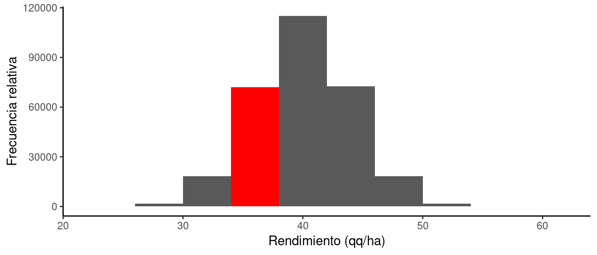
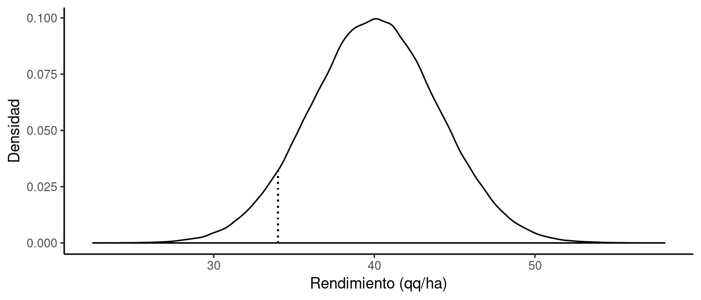
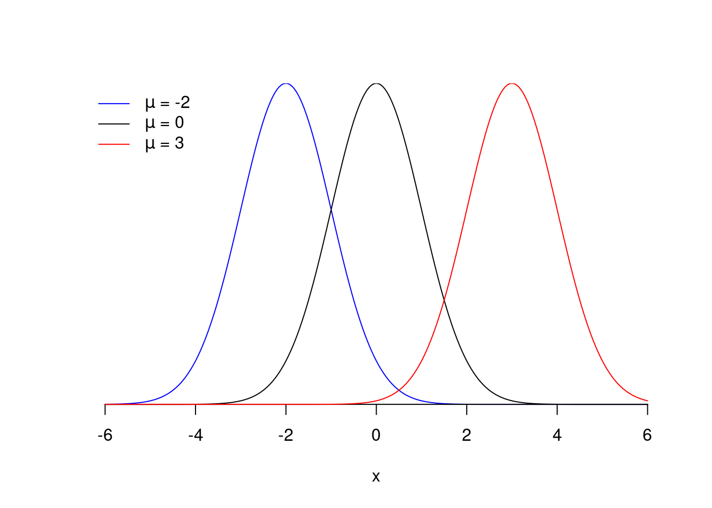
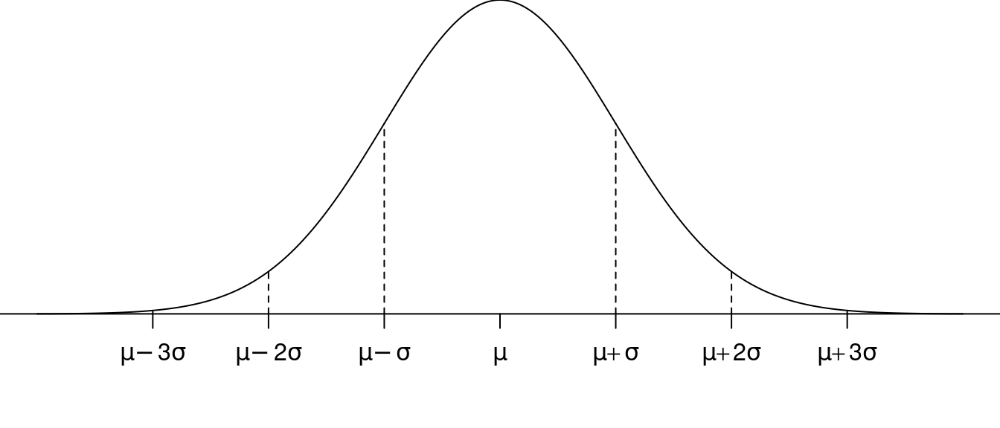
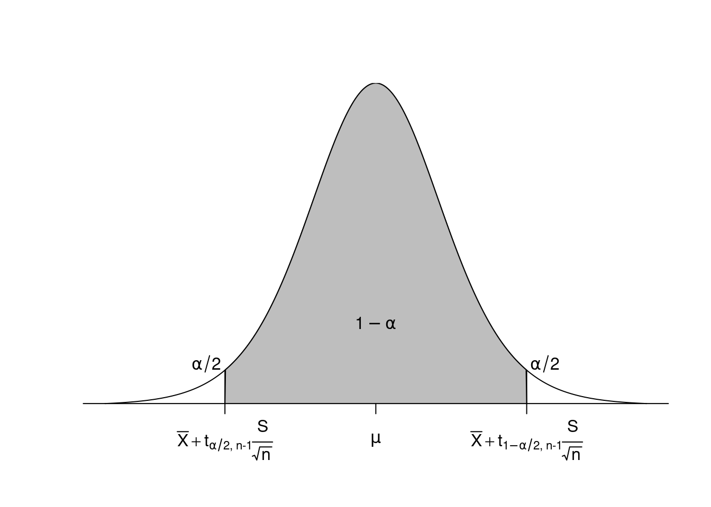
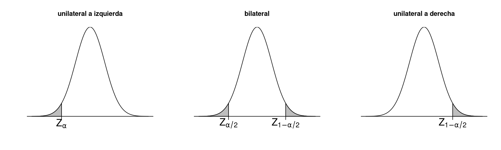

Capítulo 5 Revisión de estadística básica
En este capítulo revisaremos algunos conceptos y términos estadísticos básicos que necesitaremos para el entender el diseño y análisis estadístico de datos provenientes de estudios observacionales y experimentales. En concreto revisaremos:
- Qué es y para qué sirve la Estadística
- Variables y tipos de datos
- Población y muestra
- Estadística descriptiva
- Varibales aleatorias y distribuciones de probabilidades
- Inferencia estadística: intervalos de confianza y prueba de hipótesis.
5.1 ¿Qué es la estadística?
Existen muchas definiciones de Estadística, tantas como libros consultemos. Según Ott y Longnecker (2016), la estadística es la ciencia del diseño de estudios o experimentos, recolección de datos y modelado/análisis de los mismos para la toma de decisiones o descubrimiento de nuevo conocimiento cuando la información disponible es limitada y variable. En resumen, la estadística es la ciencia del aprendizaje a partir de los datos (learning from data) y está muy emparentada con la aplicación del método científico.
Según este enfoque, el proceso de aprender a partir de los datos implica las siguientes etapas:
Definición del problema de estudio. Todo estudio o investigación surge de una pregunta de investigación, un interrogante sobre nuestro objeto de estudio que no ha sido respondido aún con la información existente. Esto motiva la búsqueda de más información (nuevos experimentos o muestreos) para verificar las posibles respuestas o modelos que nos permitan representarlo (hipótesis). Entonces, a partir de la identificación del problema o pregunta de estudio ponemos de relieve cuáles son las variables que intervienen en el proceso, cuáles hay que controlar y cuáles hay que alterar para ver la respuesta, cuál es la información que debemos recolectar, que tipo de datos se van a trabajar, etc.
Recolección de los datos. Una vez definido el problema de estudio, necesitamos determinar de qué manera se colectará la información relevante. Para ello debemos diseñar muestreos o experimentos que permitan de manera costo efectiva obtener la mayor cantidad de información empleando el menor tiempo y dinero para lograr responder de manera precisa la pregunta que originó el estudio. La estadísitca brinda herramientas para el esto.
Resumen de la información. con los datos en mano debemos organizadorlos y resumirlos mediante técnicas núméricas o gráficas para facilitar su exploración y el reconocimiento de las principales características o patrones de los mismos (tendencias, variabilidad, anomalías, etc.). La estadística descriptiva brinda las herramientas necesarias para la descripción de la información proveniente de muestreos o experimentos.
Análisis, interpretación y comunicación de los resultados. Los datos obtenidos son una pequeña parte (muestra) de un conjunto más grande (población) el cual es imposible observar en su totalidad. Debemos analizar la información de la muestra para realizar generalizaciones y poder interpretar los resultados en la población. La estadística inferencial brinda herramientas para estimar y valorar los modelos definidos en la Etapa 1 a la luz de los datos recolectados en la Etapa 2 considerando la variabilidad del proceso que los generó.
5.2 Variables
Las variables son características de interés que se observan o miden en la unidad de observación más pequeña. Al contrario que las constantes, las variables toman diferentes valores de una individuo a otro, i.e. varían. Podemos clasificar las variables según el tipo de datos e información que contienen.
5.2.1 Tipos de datos
Según el tipo de datos, las variables son:
- Cualitativas: que expresan una cualidad o atributo no numéricos. e.g. color de pelo, sexo, estatus sanitario, estado fenológico.
- Cuantitativas: que expresan una cantidad discreta (e.g. número de ramas, número de insectos) o contínua (e.g. peso de granos, contenido de MO del suelo).
5.2.2 Escala de medición
Según la cantidad de información que contienen (de menor a mayor) las variables se clasifican en:
- Nominal: cualitativa (el número de identificación o RP de una vaca)
- Ordinal: cualitativa con orden (posición en el ranking del control lechero)
- De intervalo: cuantitativa, orden y distancias (fecha del último parto)
- De razón: cuantitativa, orden, distancia y proporciones (días desde el último parto)
La escala de medición determina la cantidad de información que tienen y qué métodos podemos aplicar. Siempre podemos analizar variables más completas con técnicas para variables más simples. No obstante, este procedimiento implica pérdida información que puede ser relevante para responder la pregunta de investigación. Por ejemplo, una variable numérica de intervalo o razón podemos convertirla en nominal u ordinal generando intervalos de clases y contabilizar las frecuencias de cada clase. Por el contrario, las variables más simples no pueden ser analizadas con técnicas diseñadas para variables más completas. Ejemplo: no podemos obtener el promedio de una variable nominal como el color de pelo.
5.3 Población y muestra
Desde el punto de vista estadístico, una Población es la totalidad de las unidades u observaciones individuales sobre la cuales queremos realizar la inferencia. Está definida en el tiempo y espacio y se caracteriza por sus parámetros, i.e. la media \(\mu\). Las poblaciones pueden ser finitas, i.e. podemos contar la totalidad de elementos que contienen, o infinita, i.e. no los podemos contar. En la mayoría de los casos, los métodos estadísticos asumen que la población es infinita o finitas pero tan grandes que a los efectos prácticos puede asumirse que son infinitas.
Por su parte, una muestra es un subconjunto de individuos u observaciones individuales que elegimos de la población. Las muestras son finitas y se caracterizan por sus estadísticos que son la versión muestral de los parámetros poblacionales, i.e. la media muestral \(\bar{y}\). Si el procedimiento que utilizamos para obtener la muestra es aleatorio entonces podemos asumir que la muestra tendrá las mismas propiedades que la población y por lo tanto podemos usar dicha información para inferencia características de la poblaicón. En el siguiente gráfico resume el concepto general de la inferencia estadística.

Figure 5.1: Esquema del proceso de inferencia estadística
Supongamos que queremos conocer el valor medio de las alturas (parámetro) en m de plantas de maíz de un lote de 50 has, i.e. \(\mu = ?\). El conjunto más grande denominado Población contiene las alturas en m de todas las plantas de maíz del lote en estudio y sobre el que se quiere hacer la inferencia (los \(\dots\) indican que en el gráfico no están representados todos los valores). Cada planta es una unidad de muestreo porque la elegimos individualmente, y una unidad observacional porque a cada planta le medimos la altura (observación). Aquellas alturas en rojo corresponden a las 6 plantas que seleccionamos mediante un muestreo aleatorio para componer la muestra (\(n = 6\)). La altura promedio de las plantas de la muestra (estadístico) es \(\bar{y} = 1.728\). Dado que el muestreo fue realizado al azar, el estadístico calculado a partir de la muestra brinda información sobre lo que pasa a nivel poblacional (\(\mu\)). A su vez, la aleatoriedad del muestreo determina que si repitieramos el muestreo de 6 unidades muchas veces, el estadístico muestral tomaría distintos valores cada vez ya que es una variable aleatoria. Finalmente, a partir de la distribución de probabilidades asociada a los posibles valores que tomaría el estadístico muestral podemos realizar la inferencia sobre el parámetro poblacional incorporando la variabilidad del muestreo.
5.4 Estadística descriptiva
La Estadística Descriptiva la rama de la Estadísica que comprende las técnicas y métodos para organizar, resumir y describir conjuntos de datos de distinto tipo recolectados en muestreos o censos.
5.4.1 Tablas de frecuencias
Conocer la distribución de los valores de las variables en estudio es importante para examinar algunas características tales como la tendencia central, la dispersión, presencia de valores atípicos, etc.
Una forma de examinar al distribución es mediante tablas de frecuencias que consisten en el listado de los valores de la variable (individuales o agrupados en clases) y sus frecuencias o conteos correspondientes. Es útil para resumir variables categóricas, discretas o conjuntos de datos cuantitativos contínuos grandes \(n > 25\).
Las frecuencias representan el número de veces que un valor o clase está representado en la muestra o población. Para ejemplificar la construcción de tablas de frecuencias en R usaremos datos de pesaje de terneros de un establecimiento ganadero del norte de Santa Fe. Los datos encuentran en el archivo pesada_terneros.xlsx.
## # A tibble: 1,598 x 4
## IDV Procedencia Fecha Peso
## <chr> <chr> <dttm> <dbl>
## 1 NR047A202 La Rosita 2017-04-06 00:00:00 204
## 2 GN685B267 La Rosita 2017-04-06 00:00:00 186
## 3 AI101A751 La Rosita 2017-04-06 00:00:00 182
## 4 TM603C877 La Rosita 2017-04-06 00:00:00 186
## 5 TM420B797 La Rosita 2017-04-06 00:00:00 186
## 6 LH837F500 La Rosita 2017-04-06 00:00:00 208
## 7 NR047A217 La Rosita 2017-04-06 00:00:00 170
## 8 LH837F508 La Rosita 2017-04-06 00:00:00 188
## 9 GN685B256 La Rosita 2017-04-06 00:00:00 172
## 10 QW110A058 La Rosita 2017-04-06 00:00:00 172
## # ... with 1,588 more rowsPrimero hay que definir el número de *intervalos de clases y sus límites de clase (inferior \(\text{LI}\) y superior \(\text{LS}\)). Generalmente se consideran semiabiertos a derecha [ ) y si bien no hay un criterio estricto para determinar el número de clases, se recomiendan entre 5 y 20 clases de igual amplitud es adecuado. El número depende de la dispersión total de los datos y la cantidad de datos.
Una forma de hacerlo es mediante la función pretty() que utiliza un algoritmo para obtener números de clases que tengan límites redondo. Con el argumento n = 8 se le sugiere un número tentativo de clases. El algoritmo en función de la variabiliad de los datos puede sugerir más o menos intervalos.
## [1] 50 100 150 200 250 300 350 400La diferencia o distancia entre dos \(\text{LI}\) o \(\text{LS}\) consecutivos se denomina amplitud de clase, \(c = \text{LI}_{i} - \text{LI}_{i-1}\) y la marca de clase es el valor central de la clase, i.e. promedio entre los límites o bien \(\text{MC}= \text{LI}+ 0.5 c\). En este caso la amplitud de las clases sugeridas por pretty() es de 50 kg. Las marcas de clases se obtienen sumando media amplitud a los límites inferiores.
## [1] 75 125 175 225 275 325 375con los límites definidos se debe categorizar o discretizar la variable contínua, es decir, transformar el vector Peso en un vector contenga el intervalo al que pertenece cada valor de peso observado. Esto se hace con la función cut() indicando los límites de clase en breaks. El argumento include.lowest = T es para aseguramos que todos los datos sean incluidos en las clases y right = F para que los intervalos no sean cerrados a derecha, es decir, que sean semi-abiertos a derecha. Con la función mutate() de dplyr creamos una nueva columna en el set de datos con las clases que contiene.
# Dividir los datos en clases
library(dplyr)
terneros <- mutate(terneros, clases = cut(Peso, breaks = lim, include.lowest = T, right = F))
terneros## # A tibble: 1,598 x 5
## IDV Procedencia Fecha Peso clases
## <chr> <chr> <dttm> <dbl> <fct>
## 1 NR047A202 La Rosita 2017-04-06 00:00:00 204 [200,250)
## 2 GN685B267 La Rosita 2017-04-06 00:00:00 186 [150,200)
## 3 AI101A751 La Rosita 2017-04-06 00:00:00 182 [150,200)
## 4 TM603C877 La Rosita 2017-04-06 00:00:00 186 [150,200)
## 5 TM420B797 La Rosita 2017-04-06 00:00:00 186 [150,200)
## 6 LH837F500 La Rosita 2017-04-06 00:00:00 208 [200,250)
## 7 NR047A217 La Rosita 2017-04-06 00:00:00 170 [150,200)
## 8 LH837F508 La Rosita 2017-04-06 00:00:00 188 [150,200)
## 9 GN685B256 La Rosita 2017-04-06 00:00:00 172 [150,200)
## 10 QW110A058 La Rosita 2017-04-06 00:00:00 172 [150,200)
## # ... with 1,588 more rowsDe este modo cada valor de peso queda asociado a una clase. Luego haciendo el conteo de clases se obtiene las frecuencias usando n
## # A tibble: 6 x 2
## clases n
## <fct> <int>
## 1 [50,100) 4
## 2 [100,150) 296
## 3 [150,200) 812
## 4 [200,250) 405
## 5 [250,300) 80
## 6 [350,400] 1como no aparece la categoría [300, 350) hay que agregarla usando complete() del paquete tidyr.
# Rellenar con clases faltantes
library(tidyr)
tabla <- complete(tabla, clases, fill = list(n = 0))
tabla## # A tibble: 7 x 2
## clases n
## <fct> <dbl>
## 1 [50,100) 4
## 2 [100,150) 296
## 3 [150,200) 812
## 4 [200,250) 405
## 5 [250,300) 80
## 6 [300,350) 0
## 7 [350,400] 1Esta tabla representa la distribución de los valores de cos de terneros. Se observa que la mayoría de los animales registró un peso de entre 150 y 200 kg ya que es el intervalo más frecuente. Existen algunos pocos terneros con cos llamativamente bajos y altos. La gran mayoría de los cos fueron entre 100 y 250 kg.
Las frecuencias definidas hasta aquí se denominan frecuencias simples absolutas ya que representan el conteo de las cases. Cuando ese conteo se expresa en relación al total pasan a ser frecuencias simples relativas (\(h_i = n_i/n\)). Estas frecuencias pueden se pueden expresar de manera que muestren el número de veces que un valor o clase y los anteriores están representado en la muestra o población. Así se obtienen las frecuencias acumuladas absolutas (\(F_i\)) y relativas (\(H_i = F_i/n\)).
Para agregar estas frecuencias y marcas de clase:
# Agregar otras frecuencias
tabla <- mutate(tabla, mc = mc, F = cumsum(n), h = n/sum(n), H = F/sum(n))
tabla## # A tibble: 7 x 6
## clases n mc F h H
## <fct> <dbl> <dbl> <dbl> <dbl> <dbl>
## 1 [50,100) 4 75 4 0.00250 0.00250
## 2 [100,150) 296 125 300 0.185 0.188
## 3 [150,200) 812 175 1112 0.508 0.696
## 4 [200,250) 405 225 1517 0.253 0.949
## 5 [250,300) 80 275 1597 0.0501 0.999
## 6 [300,350) 0 325 1597 0 0.999
## 7 [350,400] 1 375 1598 0.000626 1Esta tabla nos permite conocer cerca del 50% de los datos estan contenidos en el rango [150, 200) kg.
Los comandos anteriormente vistos se pueden encadenar con el operador %>% para obtener de manera más compacta la tabla anterior:
# Paquetes necesarios
library(dplyr)
library(tidyr)
# Limites y marcas de clase
lim <- pretty(terneros$Peso, n = 8)
c <- 50
mc <- lim[1:7] + 0.5 * c
# Tabla de frecuencias
tabla <- terneros %>%
mutate(clases = cut(Peso, breaks = lim, include.lowest = T, right = F)) %>%
count(clases) %>%
complete(clases, fill = list(n = 0)) %>%
mutate(mc = mc, F = cumsum(n), h = n/sum(n), H = F/sum(n))
tabla## # A tibble: 7 x 6
## clases n mc F h H
## <fct> <dbl> <dbl> <dbl> <dbl> <dbl>
## 1 [50,100) 4 75 4 0.00250 0.00250
## 2 [100,150) 296 125 300 0.185 0.188
## 3 [150,200) 812 175 1112 0.508 0.696
## 4 [200,250) 405 225 1517 0.253 0.949
## 5 [250,300) 80 275 1597 0.0501 0.999
## 6 [300,350) 0 325 1597 0 0.999
## 7 [350,400] 1 375 1598 0.000626 15.4.2 Gráficos
La distribución de los datos también se puede representar de manera gráfica. Existen varias técnicas que se complementan.
5.4.2.1 Histograma
El histograma es la representación gráfica de la tabla de frecuencias vista anteriormente. Consiste en graficar las frecuencias (simples, absolutas o relativas) mediante barras sobre un eje horizontal que representa la variable en estudio. La altura de las barras representa las frecuencias y el ancho la amplitud del intervalo de clase.
En R mediante el paquete ggplot2 podemos graficar histogramas con distinta cantidad y amplitud de clases combinando los argumentos bins y binwidth. Por ejemplo, un histograma con 8 clases para los datos peso de terneros sería:

Achicando el ancho de clases:
En el caso de variables discretas, las barras se grafican separadas y el gráfico se denomina gráfico de barras. Supongamos que queremos graficar las frecuencias de la variable Procedencia.
5.4.2.2 Gráfico de caja
Es una técnica propuesta por John Tukey para representar la distribución de los datos mediante un gráfico exploratorio basado en medidas robustas (mediana, cuartiles, etc) que veremos más adelante. Permite ver la región central de los datos, el sesgo y la presencia datos atípicos leves y moderados
En el caso de los terneros, la distribución de los pesos se puede representar con un gráfico de cajas usando geom_boxplot()

Según este gráfico el 50% de la distribución esta entre 158 y 206 y el sesgo es pequeño. Por defecto el gráfico de caja muestra los valores atípicos leves y extremos ya que toma 1.5 veces el rango intercuartilico. Para determinar si hay valores atípicos extremos se puede usar el argumento coef = 3.
# Boxplot peso terneros con rango = 3
ggplot(terneros, aes(x = "", y = Peso)) +
geom_boxplot(coef = 3) +
coord_flip()
El valor peso = 384 es un outlier extremo.
5.4.3 Medidas de resumen
Las medidas de resumen son funciones que permiten extraer información relevante de la distribución de los datos y expresarla de manera resumida mediante números. De acuerdo a la característica de la distribución que resumen se pueden clasificar en medidas de: tendencia central, dispersion, posición y forma
Algo de notación
Si \(X\) es un vector que representa una muestra con \(n\) observaciones, cada elemento de \(X\) se identifica por su orden mediante \(X_i\) donde \(i\) es la posición de la i-ésima observación.
Ejemplo: si \(X = [1.73, 1.84, 1.92, 2]\) son las alturas de 4 plantas de maiz, la altura de la planta 3 es \(X_i = 1.92\)
R representa los datos de manera parecida:
## [1] 1.925.4.3.1 Medidas de tendencia central
Resumen comportamiento de los datos más frecuentes, hacia donde se centra la distribución. Existen varias medidas las más comunes son la media, mediana y modo.
La media aritmética, es el centro de gravedad de los datos. Se define como el cociente entre la suma de los valores de la muestra y la cantidad observaciones:
\[ \bar{X} = \dfrac{1}{n} \sum_i^n x_i = \dfrac{\sum x_i}{n} = \dfrac{x_1 + x_2 + \cdots + x_n}{n} \]
Ejemplo: Los cos de 5 novillos son: 250, 230, 280, 235, 260. El peso promedio es:
\[ \bar{X} = \dfrac{250 + 230 + 280 + 235 + 260}{5} = 251 \]
Es la medida más común para representar la tendencia central de los datos y es fácil de calcular. Es un buen estimador de la media poblacional (\(\mu\)). No obstante, es sensible a los valores extremos.
En R la función que calcula la media se denomina mean()
## [1] 182.6546En promedio los terneros pesaron l82.65 kg.
Por su parte la mediana es el valor que separa al conjunto de datos (ordenados) en dos partes iguales. Es una medida robusta ya que no es afectada por los valores extremos.
\[ \tilde{X} = \begin{cases} \dfrac{x_{n/2} + x_{(n/2)+1}}{2} &\text{si n es par} \\ x_{(n+1)/2} &\text{si n es impar} \end{cases} \]
Si \(n\) es par, \(\tilde{X}\) es el promedio de los valores centrales (posiciones \(n/2\) y \((n/2)+1\)). Si \(n\) es impar, \(\tilde{X}\) es el valor ubicado en la posicion \((n+1)/2\)
En R la función que calcula la mediana se denomina median():
## [1] 180El 50% de los terneros pesó igual o menos de 180 kg.
5.4.3.2 Medidas de dispersión
Son medidas que resumen el grado de variabilidad de los datos. Entre las más comunes se encuentran el rango, varianza y desviación estándar.
El rango se define como la diferencia entre el valor máximo y mínimo de los datos. Es una medida muy simple pero altamente sensible a valores extremos ya que solamente usa la información del mínimo y máximo.
\[ \text{rango} = \text{max}(X) - \text{min}(X) \]
En R el rango se obtiene de la misma manera mediante las funciones max() y min().
## [1] 306Una medida mejor para expresar la variabilidad es la varianza (\(s^2\)) que se define como el promedio de las desviacione cuadráticas de las observaciones respecto de la media.
\[ s^2 = \dfrac{\sum (x_i - \bar{X})^2}{n-1} = \dfrac{1}{n-1} \left[ \sum x_i^2 - \dfrac{(\sum x_i)^2}{n} \right] \]
El denominador \(n-1\) representa los grados de libertad, es decir, el número de datos de la muestra que pueden variar cuando se usa el estimador de la media \(\bar{X}\).
Dado que los desvíos respecto del promedio tienen la propiedad de cancelarse \(\sum (x_i - \bar{x}) = 0\) los desvíos se deben elevar al cuadrado y esto a convierte una medida muy sensible a valores extremos.
La desviación estándar (\(s\)) es la raiz cuadrada de la varianza
\[ s = \sqrt{s^2} \]
La desviación estándar es interpretable ya que está en la escala original. Al igual que la varianza es sensible a valores extremos ya que utiliza \(\bar{X}\) y los desvíos elevados al cuadrado.
En R la varianza y desvio se obtienen con var() y sd().
## [1] 1383.534## [1] 37.19588Si bien la desviación estándar es interpretable ya que está en la misma escala que la variable original, a veces es conveniente expresarle en relación al promedio de los datos para compararlo con otros datos o variables. El coeficiente de variación (\(CV\)) es una media de dispersión relativa para comparar la variabilidad entre muestras.
\[ CV = \dfrac{s}{\bar{X}} \]
En R podemos obtenerlo combinando las funciones sd() y mean()
## [1] 0.2036406Los pesos de los terneros varían un 20% en torno al promedio.
5.4.3.3 Medidas de posición
Los cuantiles son una generalización del concepto de la mediana. En R se calculan con la función quantile(). Cuando los datos se dividen en cuatro partes iguales se llaman cuartiles \((Q_i)\), si se divide en 10 partes iguales son deciles (\(D_i\)) y para 100 partes iguales percentiles (\(P_i\)).
\[ \tilde{X} = Q_2 = D_5 = P_{50} \]
Una medida importante es el rango intercuartílico (\(IQR\)) que indica entre que valores se encuentra el 50% central de la distribución de los datos
\[ IQR = Q_3 - Q_1 \]
Por ejemplo para obtener los valores de peso que separa a la muestra en 4 partes iguales:
## 25% 50% 75%
## 158 180 206o bien, ¿cuánto pesa el ternero más liviano del 20% de los terneros más pesados? Eso sería el percentil 0.8.
## 80%
## 213.2Para obtener el percentil que corresponde a un dato particular de la muestra se usa la función empírica de distribución acumulada.
# Obtener la ECDF
ecdf_peso <- ecdf(terneros$Peso)
# Obtener el percentil del peso = 213.2
ecdf_peso(213.2)## [1] 0.79974975.4.3.4 Medidas de forma
Las medidas de forma resumen otros aspectos de la distribución como el sesgo o asimetría o la variabilidad en distribuciones unimodales o kurtosis.
La asimetría de una distribución hace referencia a como se distribuyen los valores en torno a la media. En una distribución simétrica, la mitad izquierda es identica a la mitad derecha.

La kurtosis indica cuanto se concentran los valores en torno a la media. Las distribuciones leptocurticas tienen menor variabilidad. Lo opuesto ocurre con las platicurticas.

Hay varias formas de calcular los coeficientes de asimetría y kurtosis. Una de ellas deriva de los momentos estandarizados:
\[ m_k = \dfrac{\sum (X_i - \bar{X})^k}{n} \]
Si \(k = 1\), \(m = 0\) dado que \(\sum (X_i - \bar{X}) = 0\). En cambio, si \(k = 2\), \(m\) es igual al estimador sesgado de la varianza poblacional. Así los momentos 3 y 4 tienen información sobre la asimetría y curtosis.
El coeficiente \(\sqrt{b_1}\) indica la asimetría:
\[ \sqrt{b_1} = \dfrac{m_3}{\sqrt{m_2^3}} = \dfrac{\sqrt{n} \sum (X_i - \bar{X})^3}{\sqrt{ \left[ \sum(X_i - \bar{X})^2 \right]^3}} \]
- Si \(\sqrt{b_1} = 0\) la distribución es simétrica
- Si \(\sqrt{b_1} > 0\) la distribución es sesgada a derecha
- Si \(\sqrt{b_1} < 0\) la distribución es sesgada a izquierda
El coeficiente \(b_2\) indica la kurtosis
\[ b_2 = \dfrac{m_4}{m_2^2} = \dfrac{n \sum (X_i - \bar{X})^4}{\left[ \sum(X_i - \bar{X})^2 \right]^2} \]
- Si \(b_2 = 3\) la distribución es normal
- Si \(b_2 > 3\) la distribución es leptocirtoca
- Si \(b_2 < 3\) la distribución es platocurtica
En R los coeficientes de kurtosis y asimetría se obtienen del as funciones skewness() y kurtosis() del paquete moments:
## [1] 0.3905109## [1] 3.3145325.4.3.5 Todas las medidas juntas
Usando la función summarise() de dplyr se pueden calcular una o más estadísticas de resumen y resumirlas en forma de tabla. Asímismo también pueden calcularse por subconjuntos.
library(moments)
# General
terneros %>%
summarise(n = length(Peso), media = mean(Peso), mediana = median(Peso), desv = sd(Peso),
min = min(Peso), max = max(Peso), IQR = IQR(Peso), Q20 = quantile(Peso, 0.2),
Q80 = quantile(Peso, 0.8), asim = skewness(Peso), kurt = kurtosis(Peso))## # A tibble: 1 x 11
## n media mediana desv min max IQR Q20 Q80 asim kurt
## <int> <dbl> <dbl> <dbl> <dbl> <dbl> <dbl> <dbl> <dbl> <dbl> <dbl>
## 1 1598 183. 180 37.2 78 384 48 152 213. 0.391 3.31# Estadítica de resumen por Procedencia
terneros %>%
group_by(Procedencia) %>%
summarise(n = length(Peso), media = mean(Peso), mediana = median(Peso), desv = sd(Peso),
min = min(Peso), max = max(Peso), IQR = IQR(Peso), Q20 = quantile(Peso, 0.2),
Q80 = quantile(Peso, 0.8), asim = skewness(Peso), kurt = kurtosis(Peso))## # A tibble: 7 x 12
## Procedencia n media mediana desv min max IQR Q20 Q80
## <chr> <int> <dbl> <dbl> <dbl> <dbl> <dbl> <dbl> <dbl> <dbl>
## 1 Don Alberto 69 179. 182 26.9 110 222 46 155. 205.
## 2 La Alameda 201 190. 182 39.5 122 294 52 156 226
## 3 La Estrella 118 179. 180 14.2 144 218 18 168 188
## 4 La Rosita 98 180. 180 17.4 140 242 22 166 192
## 5 La Segunda 43 229. 228 24.8 180 288 31 210 247.
## 6 Las Glicin… 494 160. 155 33.7 78 280 44 130 186
## 7 Los Corral… 575 197. 196 35.8 96 384 50 168 226
## # ... with 2 more variables: asim <dbl>, kurt <dbl>5.5 Variabiles aleatorias y distribuciones de probabilidades
Los resultados o eventos de un experimento aleatorio pueden ser cualitativos o cuantitativos (discretos o continuos) los cuales se asocian a variables aleatorias (VA)
Variables porque sus valores no son todos iguales (hay variación) y aleatorias por que no se puede predecir con certeza que valor va a tomar, pero se puede asignar una probabilidad.
Las VA pueden ser:
Cualitativas cuando los posibles valores son categóricos, generalmente finitos y tipicamente pocas (a veces codificados como números). Ejemplo: el sexo de un insectos (variable) extraído al azar de una planta infestada (experimento) puede ser macho o hembra
Cuantitativa discreta (VAD) cuando las observaciones pueden ser números enteros finitos o infinitos pero contables. Ejemplo el número de bichos blancos (variable) en una muestra de suelo obtenida al azar (experimento) puede ser 0, 1, 2, …
Cuantitativa continua (VAC) cuando las observaciones pueden ser cualquier número del intervalo de números reales. Ejemplo la altura de una planta (variable) seleccionada al azar de un cultivo de soja (experimento) puede ser en cm 30, 45, 52.1, …
5.5.1 Distribución de probabilidades
Una distribución de probabilidades hace referencia a la manera en que las probabilidades de los posibles valores de una variable aleatoria se distribuyen. Se pueden representar de manera gráfica, tabular o mediante una función.
Ejemplo de VAD si se seleccionan dos vacas preñadas al azar de un rodeo grande, ¿cual es la probabilidad de que cualquiera de las dos para una ternera?
La VA es el número de terneras que pare una vaca elegida al azar en dos pariciones consecutivas (X)
Los posibles valores son 0 (MM), 1 (MH o HM) y 2 (HH)
La probabilidad de que sea ternera en una parición dada es \(p = P(\text{ternera}) = 0.5\)
| Sexo | \(X\) | \(P(X = x)\) |
|---|---|---|
| MM | 0 | 0.25 |
| MH o HM | 1 | 0.50 |
| HH | 2 | 0.25 |
La gráfico correspondiente a la tabla anterior sería:

Lo anterior se puede representar mediante la funcion de probabilidad binomial:
\[ P(X = x) = f(x) = \binom{2}{x} = p^x q^{2-x} \]
En el caso de una variable aleatoria continua (VAC), ésta puede tomar infinitos de valores posibles (puntos en un intervalo), asociados con mediciones en una escala continua. La probabilidad de un valor dado de \(X\) es 0
Ejemplo rendimientos de lotes de soja en qq/ha de una region amplia (población)
La probabilidad de que el rendimiento de que un lote elegido al azar esté entre 34 y 38 es el área que ocupa el rectángulo (ancho de clase x frecuencia relativa)
\[ P(34 \le X \le 38) = 4 * 0.0601267 = 0.2405067 \]
Si dividimos en intervalos de 2 qq/ha…

La probabilidad de que el rendimiento sea entre [35, 37] es el área que ocupa el rectángulo. La probabilidad es menor.
\[ P(35 \le X \le 37) = 2 * 0.001485 = 0.00297 \]
Si dividimos en intervalos sucesivamente pequeños (infinitamente pequeños) llegamos a la curva de densidad…
La probabilidad de que sea igual a 34 es 0 ya que la curva representa la altura (densidad) pero el ancho de clase tiende a 0.
En VAC la función de densidad de probabilidades \(f(X)\) describe la altura de la curva para un valor dado de \(X\). NO ES LA PROBABLIDAD!!. Es imposible asignar un valor de probabilidad a cada uno de los infinitos valores de \(X\)

La probabilidad de que una VAC caiga en un intervalo, e.g. \(x_0\) y \(x_1\) se desprende de la interpretación probabilística del área de un intervalo en un histograma de frecuencias relativas y es igual al área bajo la curva de densidad
\[ P(x_0 \le X \le x_1) = \int_{x_0}^{x_1} f(X) \mathrm{d}X \]
La función de distribución de probabilidad acumulada \(F(X)\) es la probabilidad de que la VAC tome un valor igual a \(x_0\) o menor.
\[ P(X \le x_0) = F(x_0) = \int_{-\infty}^{x_0} f(X) \mathrm{d}X \]
5.5.2 Esperanza y varianza
La esperanza matemática \(E(X)\) de una VAC es el valor esperado de la variable aleatoria \(X\) en la población y se define como:
\[ E(X) = \mu_X = \int_{-\infty}^{\infty} X f(X) \mathrm{d}X \]
La \(E(X)\) tiene la siguientes propiedades
- La esperanza de una constante es igual a la constante, \(E(a) = a\)
- La esperanza de la suma (o resta) de una constante y una variable aleatoria es la constante más (menos) la esperanza de la variable, \(E(a \pm X) = E(a) \pm E(X) = a \pm E(X)\)
- La esperanza del producto de una constante y una variable aleatoria es el producto de la constante y la la esperanza de la variable, \(E(aX) = E(a) E(X) = a E(X)\)
- La esperanza de la suma (o resta) de dos variables aleatorias independientes es la suma (o resta) de sus esperanzas, \(E(X \pm Y ) = E(X) \pm E(Y)\)
La varianza de una variable aleatoria \(V(X)\) es el valor esperado de los desvíos cuadráticos de los valores de una variable respecto a su esperanza (media). El desvio \(D(X)\) es la raiz cuadrada positiva.
\[ V(X) = E\left\{\left[ x_i - E(X) \right]^2\right\} = \int_{-\infty}^{\infty} (x_i - \mu_X)^2 f(X)\mathrm{d}X \\ \]
Las propiedades de \(V(X)\) son:
- La varianza de una constante es igual 0, \(V(a) = 0\)
- La varianza de la suma (o resta) de una constante y una variable aleatoria es la varianza de la variable, \(V(a \pm X) = 0 + V(X) = V(X)\)
- La varianza del producto de una constante y una variable aleatoria es el producto del cuadrado de la constante y la varianza de la variable, \(V(aX) = a^2 V(X)\)
- La varianza de la suma (o resta) de dos variables aleatorias independientes es la suma de sus varianza, \(V(X \pm Y ) = V(X) + V(Y)\)
5.5.3 Distribución Normal
Muchos procesos contínuos de la naturaleza se distribuyen siguiendo una curva con forma de campana, unimodal, simétrica: la distribución NORMAL
\[ X \sim N(\mu, \sigma) \]
Las funciones de densidad y probabilidad acumulada para la Normal son:
Función densidad
\[ f(X) = \dfrac{1}{\sigma\sqrt{2\pi}} e^{-\dfrac{(X - \mu)^2}{2\sigma^2}} \]
Función probabilidad acumulada
\[ F(X) = P(X \le x_0) = \dfrac{1}{\sigma\sqrt{2\pi}} \int_{-\infty}^{x_0} e^{-\dfrac{(X - \mu)^2}{2\sigma^2}} \mathrm{d}X \]
Estas funciones están definidas en función de dos parámetros:
Esperanza \[ E(X) = \int_{-\infty}^{+\infty} X f(X) \mathrm{d}X = \mu \]
Varianza \[ V(X) = \int_{-\infty}^{+\infty} \left[X-E(X)\right]^2 f(X) \mathrm{d}X = \sigma^2 \]
La esperanza o parámetro \(\mu\) determina la posición de la curva.
El parámetro \(\sigma\) determina la forma.

Valores característicos de la curva normal:
- \(P(\mu - \sigma \le X \le \mu + \sigma) \approx 0.6826\)
- \(P(\mu - 2\sigma \le X \le \mu + 2\sigma) \approx 0.9544\)
- \(P(\mu - 3\sigma \le X \le \mu + 3\sigma) \approx 0.9974\)
5.5.4 Distribución de la media muestral
La media aritmética (y cualquier estadístico muestral) que se calcula a partir de una muestra aleatoria de tamaño \(n\) es una variable aleatoria y por lo tanto tiene una distribución de probabilidades asociada

En el caso de la media, su distribución muestral tiene \(\mu_{\bar{X}} = \mu\) y \(\sigma_{\bar{X}} = \dfrac{\sigma}{\sqrt{n}}\)
5.5.5 Teorema del Límite Central
Si \(\bar{X}\) es la media muestral calculada a partir de una muestra aleatoria de \(n\) observaciones de una población que tiene media \(\mu\) y desvío \(\sigma\), y \(\mu_\bar{X}\) y \(\sigma_\bar{X}\) la media y desviación estándar de la distribución de \(\bar{X}\):
La media de la distribución de muestreo es \(\mu_{\bar{X}} = \mu\)
La desviación estándar de la distribución de muestreo es \(\sigma_\bar{X} = \dfrac{\sigma}{\sqrt{n}}\)
Cuando \(n\) es grande (\(n > 30\) *), la distribución de muestreo de \(\bar{X}\) es aproximadamente Normal, siendo la aproximación más precisa a medida que aumenta \(n\) \[ n \rightarrow \infty, \bar{X} \sim N(\mu, \sigma/\sqrt{n}) \]
Cuando la población de \(X\) tiene distribución N, la distribución de muestreo de \(\bar{X}\) es exactamente Normal para cualquier tamaño de muestra \(n\)
El siguiente link es un simulador que permite visualizar el concepto de la distribución de la media muestral y el teorema del límite central. A partir de una población finita compuesta por los números 1 a 20 con distribución uniforme (misma probabilidad de elegir cada número), se simulan 500 muestras con reposición de tamaño 1 a 100.
¿Que succede con la distribución de las medias muestrales a medida que aumentamos el \(n\)? ¿Que pasa cuando \(n = 1\)?
5.6 Intervalos de Confianza: generalidades
Un intervalo de confianza (IC) más informativo que un estimador puntual: incluye incertidumbre debida al error de estimación. De manera general un IC se construye mediante la siguiente expresión:
\[ P(\hat{\theta} - k\sigma_{\hat{\theta}} \leq \theta \leq \hat{\theta} + k\sigma_{\hat{\theta}}) = 1 - \alpha \]
donde: \(\theta\) y \(\hat\theta\) son el parámetro a estimar y su estimador; \(k\) es un cuantil de la distribución de muestreo asociada a \(\hat\theta\); \(\sigma_{\hat\theta}\) error del estimador; \(1-\alpha\) coeficiente de confianza.
De aquí se desprende que:
Los límites son funciones del estimador puntual (VA) y su distribución de muestreo asociadas
Una vez determinado el intervalo (fijados los límites), la probabilidad de que el \(IC\) contenga al parámetro a estimar es 1 ó 0, lo contiene o no lo contiene
El Nivel de confianza \((1-\alpha)\%\) o coeficiente de confianza \((1-\alpha)\) es la proporción de veces en muestreos repetidos que el \(IC\) obtenido por el procedimiento de estimación resultaría en un IC que contenga al parámetro poblacional
Ejemplo Suponiendo que la media de la población de pesos de vacas de una región lechera es \(\mu = 550\) kg, si tomáramos al azar 100 muestras de tamaño \(n = 60\) y estimáramos el intervalo de confianza para \(\bar{X}\) con un \((1-\alpha) = 0.95\)

En este caso, al repetir el procedimiento de muestreo de 60 vacas unas 100 veces, solamente en 3/100 obtuvimos un IC que no contenía al parámetro poblacional que queríamos estimar.
La amplitud del IC indica la calidad o confiabilidad de la inferencia y esta depende del nivel de confianza establecido, la variabilidad de la población original y el tamaño de la muestra.
par(mfcol = c(1,3), mar = c(4, 0, 2, 0))
# Distinto alpha
IC <- data.frame(xbar = c(30, 30), sigma = c(9, 9), n = c(10, 10), y = c(0.75, .25))
IC <- within(IC, {
LI <- xbar + qnorm(c(0.05, 0.005)) * sigma/sqrt(n)
LS <- xbar + qnorm(c(0.95, 0.995)) * sigma/sqrt(n)
})
with(IC, {
plot(xbar, y, ylim = c(0, 1), axes = F, ylab = "", main = expression(paste("IC con (1-", alpha, ")% = 90 y 99%")))
axis(side = 1)
arrows(LI, y, LS, y, length = 0.1, angle = 90, code = 3)
})
# Distinto sigma
IC <- data.frame(xbar = c(30, 30), sigma = c(3, 9), n = c(10, 10), y = c(0.75, .25))
IC <- within(IC, {
LI <- xbar + qnorm(0.025) * sigma/sqrt(n)
LS <- xbar + qnorm(0.975) * sigma/sqrt(n)
})
with(IC, {
plot(xbar, y, ylim = c(0, 1), axes = F, ylab = "", main = expression(paste("IC con ", sigma, " = 3 y 9")))
axis(side = 1)
arrows(LI, y, LS, y, length = 0.1, angle = 90, code = 3)
})
# Distinto n
IC <- data.frame(xbar = c(30, 30), sigma = c(9, 9), n = c(10, 100), y = c(0.75, .25))
IC <- within(IC, {
LI <- xbar + qnorm(0.025) * sigma/sqrt(n)
LS <- xbar + qnorm(0.975) * sigma/sqrt(n)
})
with(IC, {
plot(xbar, y, ylim = c(0, 1), axes = F, ylab = "", main = expression(paste("IC con n = 10 y 100")))
axis(side = 1)
arrows(LI, y, LS, y, length = 0.1, angle = 90, code = 3)
})
- Para \(n\) y \(\sigma\) fijos, la amplitud aumenta con el nivel de confianza
- Para un \((1-\alpha)\) y \(n\) fijos, la amplitud aumenta con la variabilidad de la población de origen
- Para un \((1- \alpha)\) y \(\sigma\) fijos, la amplitud aumenta para muestras más chicas
5.6.1 IC de la media (\(\mu\)) con \(\sigma\) desconocido
Para muestras pequeñas de poblaciones normales o aproximadamente normales: se reemplaza \(\sigma\) por su estimador insesgado \(s\)
\[ s = \sqrt{\dfrac{\sum (X - \bar{X})^2}{n-1}} \]
Estandarizando se obtiene el estadístico \(t\) tiene distribución \(t\) de Student.
\[ t = \dfrac{\bar{X} - \mu}{\dfrac{S}{\sqrt{n}}} \sim t_{n-1} \]
Los grados de libertad (\(gl\)) son los pedazos de información utilizadas en la estimación de \(\sigma\) usando \(S\)
En el cálculo de \(s\) se utilizan los desvíos respecto de \(\bar{X}\), los cuales suman 0 siempre. Entonces, si se conocen las \(n-1\) desviaciones \((X_i - \bar{X})\), la n-ésima desviación es fija para hacer \(\sum (X_i - \bar{X}) = 0\)
\(\sigma\) mide la dispersión en torno a \(\mu\), entonces para estimar \(\sigma\) hay que estimar primero \(\mu\), luego quedan \(n-1\) piezas de información disponible para estimar \(\sigma\)
5.6.1.1 Distribución \(t\) de Student
Distribución de probabilidades para \(\bar{X}\) obtenidas de tamaño pequeño \(n<30\) de poblaciones normales
Propiedades de la \(t\) de Student
- Hay infinitas distribuciones \(t\) se caracterizan por sus grados de libertad \(\nu =n-1\) (tamaño de la muestra)
- Es simétrica y centrada en 0, igual que la \(Z\), \(E(t) = 0\)
- La varianza es \(V(t) = \nu / (\nu -2)\) y por lo tanto más variable que \(Z\) que tiene \(V(Z) = 1\)
- A medida que \(\nu\) se incrementa, \(t\) se aproxima a \(Z\)
Reemplazando \(t\) y despejando \(\mu\)
\[ P \left( \bar{X} + t_{\alpha/2, n-1} \dfrac{S}{\sqrt{n}} \leq \mu \leq \bar{X} + t_{1-\alpha/2, n-1} \dfrac{S}{\sqrt{n}} \right) = 1 - \alpha \]
Veamos la estimación del IC de confianza de una media medainte un ejemplo:
En un establecimiento avícola se toma una muestra al azar de 16 aves para determinar el aumento de peso. El aumento de peso promedio por semana fue de 96 g y con un desvío estándar de 9,5 g. Estimar el incremento de peso promedio para las aves de dicho establecimiento con un intervalo de confianza del 90%.
# Datos
n <- 16
alfa <- 0.10
xbar <- 96
S <- 9.5
# Cuantiles distribución t
t_crit <- qt(p = c(alfa/2, 1 - alfa/2), df = n-1)
t_crit## [1] -1.75305 1.75305## [1] 91.83651 100.16349Luego, el intervalo de confianza queda definido:
\[P(91.84 \leq \mu \leq 100.16) = 0.90\]
Esto expresa la probabilidad de que en un muestreo futuro el valor de la medai poblacional esté comprendida entre estos límites. Cuando ya tenemos tomada la muestra, la interpretación es diferente: con un 90% de confianza, el intervalo de 91.84 a 100.16 g contiene al el aumento de peso por ave por semana en dicho establecimiento.
5.7 Test hipotesis: generalidades
Las pruebas de hipótesis es uno de los métodos de inferencia estadística. A diferencia de la estimación de parámetros, en una prueba de hipótesis hay una idea previa del valor del un parámetro poblacional que será contrastado con los datos obtenidos de esa población.
En una prueba de hipótesis se plantean dos modelos o hipótesis para explicar el fenómeno o proceso en estudio que produce los datos (población):
\[ H_0: \theta = \theta_0 \quad \text{vs} \quad H_1: \theta \ne \theta_0 \]
La hipótesis nula \(H_0\) es la que se usa para construir el modelo de la población con la idea de verificar su falsedad. Refleja un pensamiento escéptico. La hipótesis alternativa o de investigación \(H_1\) es la alternativa a considerar en caso de rechazar \(H_0\). La evidencia empírica que sustenta o rechaza el modelo nulo \(H_0\) se obtiene de una muestra aleatoria de la población sobre la cual se quiere inferir.
Una prueba de hipótesis estadística se basa en el concepto de prueba por contradicción, es decir que se evalúa la \(H_1\) probando o no la falsedad de \(H_0\). Esto involucra:
- Formular las hipótesis \(H_1\) y \(H_0\)
- Cálcular el estadístico de prueba apropiado, e.g. \(Z_{\theta_0}\)
- Determinar la zona de rechazo y regla de decisión.
- Chequear de supuestos
- Concluir
5.7.1 ¿Cómo se formulan las hipótesis?
Las hipótesis pueden formularse teniendo los siguientes criterios generales:
- La afirmación de que \(\theta\) es igual a un determinado valor siempre tiene que estar incluida en \(H_0\). El valor hipotético de \(\theta\) en \(H_0\) es el valor nulo \(\theta_0\)
- La afirmación sobre \(\theta\) que se quiere soportar or detectar con los datos es la \(H_1\)
- La negación de \(H_1\) es la \(H_0\)
- La \(H_0\) se presume correcta a menos que hay evidencia suficiente para rechazarla en pos de la \(H_1\)
Ejemplos 1 Un edafólogo quiere evaluar si el contenido de N total de los suelos de una región es igual o inferior a 0.12%. Como su hipótesis de trabajo contiene la igualdad, entonces \(H_0: \mu \le 0.12\% \quad \text{vs} \quad H_1: \mu > 0.12\%\)
Ejemplos 2 Otro edafólogo quiere evaluar si el contenido de N total es menor a 0.12%. En este caso, la hipótesis de trabajo no incluye la igualdad, entonces: \(H_0: \mu \ge 0.12\% \quad \text{vs} \quad H_1: \mu < 0.12\%\).
Ejemplo 3 A un tercero le interesa saber si el nivel de N total es distinto de 0.12%. Como la hipotesis de trabajo plantea la desigualdad, entonces, \(H_0: \mu = 0.12\% \quad \text{vs} \quad H_1: \mu \ne 0.12\%\)
5.7.2 Estadístico de prueba
El estadísico de prueba es un valor estandarizado que se calcula a partir de los datos de la muestra aplicando una función. Como la muestra es un conjunto de variables aleatorias, el resultado de la función aplicada es a su vez una variable aleatoria cuyos posibles valores tienen una distribución de probabilidades asociada la cual está determinada por la \(H_0\) y los supuestos

5.7.3 Zona de rechazo
La zona de rechazo está compueta por los valores de la distribución del estadístico de prueba \(Z_\theta\) que soportan la \(H_1\) y contradicen \(H_0\), es decir, los valores de \(\theta\) con que permiten rechazar \(H_0\).

La \(H_1\) determina donde está la zona de rechazo y el sentido de la interpretación de la evidencia. De este modo las pruebas pueden ser bilaterales si \(H_1: \theta \ne \theta_0\) o unilaterales izquierda \(H_1: \theta < \theta_0\) o derecha \(H_1: \theta > \theta_0\)
5.7.4 Errores
En toda prueba de hipótesis se pueden cometer errores al tomar la decisión. El tipo de error dependerá de la decisión tomada y el valor verdadero de la \(H_0\).
| Decisión | \(H_0\) es cierta | \(H_0\) es falsa |
|---|---|---|
| se rechaza \(H_0\) | Error Tipo I | No hay error |
| no se rechaza \(H_0\) | No hay error | Error Tipo II |
Si bien no podemos conocer el verdadero valor del los parámetros poblacionales, y por lo tanto desconocemos si la \(H_0\) es verdadera o falsa, es posible estimar las probabilidades de cometer los errores Tipo I y tipo II, las que se denominan \(\alpha\) y \(\beta\) respectivamente.
Supongamos que tenemos dos hipótesis en juego \(H_0: \mu = 1\) vs \(H_1: \mu = 1\). El siguiente gráfico muestra las áreas sombreadas \(\alpha\) y \(\beta\) que representan la probabilidad de cometer error tipo I y II si tomáramos la información del estadísico \(z_0\) para decidir sobre \(H_0\). Si el modelo válido fuera el especificado en \(H_0\), el área \(\alpha\) indica la probabilidad de rechazar \(H_0\) cuando es verdadera, es decir, obtener estadísticos igual o más extremos que \(z_0\) bajo el supuesto de \(H_0\). En cambio, si \(H_1\) fuese verdadera, el área \(\beta\) representa la probabilidad de no rechazar \(H_0\) cuando esta es falsa.
Figure 5.2: Distribución de probabilidades de estadístico de prueba bajo supuesto de H0 y H1
\[ P(\text{rechazar $H_0$ | $H_0$ es cierta}) = \alpha \\ P(\text{no rechazar $H_0$ | $H_0$ es falsa}) = \beta \]
\(\alpha\) y \(\beta\) dependen de la verdadera distancia entre las medias, la variabilidad de la población en estudio y el tamaño de la muestra. No se pueden controlar ambas tasas de error a la vez.
Así como \(\beta\) determina las probabilidades de cometer error tipo II, el complemento \(1-\beta\) representa la probabilidad que tenemos de decidir correctamente sobre \(H_0\) rechazándola cuando realmente es falsa. Esto se denomina potencia

\[ P(\text{rechazar $H_0$ | $H_0$ es falsa}) = 1 - \beta \]
Para un nivel de significancia \(\alpha\) dado, la potencia se halla utilizando la distribución que asume \(H_1\) como verdadera.
5.7.5 Regla de decisón y valores \(p\)
Para decidir sobre una hipótesis se debe tener una regla de decisión fijando un \(\alpha\) (probabilidad de error Tipo I)
Opción 1 A partir del \(\alpha\) calculamos el valores crítico o de tabla para el estadístico de prueba \(Z_\theta\) y deliminatamos las zonas de rechazo o aceptación que contienen todos los valores de \(Z_\theta\) que rechazasn \(H_0\).
- Para bilaterales:
- Si \(|Z_\theta| \ge z_{1-\alpha/2}\) se rechza \(H_0\)
- Si \(|Z_\theta| < z_{1-\alpha/2}\) no se rechza \(H_0\)
- Para unilaterales izquierda
- Si \(Z_\theta \ge z_{\alpha}\) no se rechza \(H_0\)
- Si \(Z_\theta < z_{\alpha}\) se rechza \(H_0\)
- Para unilaterales derecha
- Si \(Z_\theta \le z_{1-\alpha}\) no se rechza \(H_0\)
- Si \(Z_\theta > z_{1-\alpha}\) se rechza \(H_0\)
Opción 2 Asumiendo \(H_0\) y una distribución del estadístico (e.g. Normal), se calcula la probabilidad \(p\) de ocurrencia de un valor igual o más extremo (a una o dos colas).
\[ P(Z \ge Z_{\theta_0} | H_0) = p \]
Luego:
Si \(p > \alpha\), no hay evidencias para rechazar \(H_0\), aunque no se prueba que ésta sea verdadera
Si \(p \le \alpha\), hay evidencia para rechazar \(H_0\), aunque no se esta probando que \(H_0\) sea falsa o \(H_1\) sea verdadera
¿Qué es el valor p? Es la probabilidad de que, si se repite el muestreo, el estadístico de prueba a obtener sea igual o más extremo que el observado en los datos asumiendo que \(H_0\) es cierta.
Si los datos no concuerdan con el modelo nulo, entonces hay evidencia para descartarlo en favor del alternativo
5.7.6 Conclusiones
La conclusión consta de 3 partes fundamentales:
¿Cuál es la decisión? ¿Que sucede con \(H_0\)?
¿Por qué se llega a esa decisión? El estadístico con valor p o bien con el valor crítico y nivel de significancia.
Interpretación o consencuencias en el contexto del problema o pregunta de investigación
Una inferencia completa es cuando además de contestar sobre 1 y 2 se agrega información sobre las consecuencias de haber recvhazado \(H_0\) en el contexto del problema de investigación. Agregar información sobre la magnitud y sentido de las diferencias agregar más información a la inferencia.
5.8 Comparación de dos poblaciones
En experimentos comparativos el interés es determinar si las respuestas de las unidades experimentales provienen de una distribución común con una única \(\mu\) o bien hay evidencia para considerar que cada tratamiento o grupo tiene su propia distribución.
En otras palabras: ¿las muestras con \(\bar{y}_1\) y \(\bar{y}_2\) provienen de dos poblaciones distintas con \(\mu_1\) y \(\mu_2\), o de una sola población con \(\mu\)?
\[ E(\bar{y}_1) = \mu_1 \\ E(\bar{y}_2) = \mu_2 \]

\[ E(\bar{y}_1) = \mu \\ E(\bar{y}_2) = \mu \]
5.8.1 Muestras independientes
5.8.1.1 Modelo lineal aditivo
A los fines del análisis estadístico es útil desarrollar un modelo estadístico que permita representar cada observación de las muestras. En un experimento simple con dos grupos o tratamientos podemos pensar en el siguiente modelo:
\[ y_{ij} = \mu_i + e_{ij} \quad \quad i = 1, 2; j = 1, \dots, n_i \]
donde: \(y_{ij}\) es la j-ésima observación del i-ésimo tratamiento; \(\mu_i\) es la media del i-ésimo tratamiento; \(e_{ij}\) es el error aleatorio asociado a la j-ésima observación del i-ésimo tratamiento. Este modelo se denomina codelo de medias de celda porque cada observacion es representada por la media de su tratamiento mas un componente aleatorio.
Los supuestos de este moelo se resumen en: \(e_{iid} \sim N(0, \sigma^2)\), es decir los errores o residuos \(e\) son variables aleatorias independientes e idénticamente distribuídas con distribución normal con media 0 y varianza constante. La independencia significa que cada individuo no contiene información de la respuesta de otra observación: i.e. \(Cor(e_{ij}, e_{i'j'}) = 0\). Por otro lado, la distribución Normal con media 0 y varianza constante indica que cada las respuestas de los individuos se centran en torno a la media de su grupo y la varianza de cada grupo es similar (homocedasticidad, \(\sigma^2\) no tiene subíndice).
Una forma alternativa de representar los datos es mediante el modelo de efectos donde en vez de representar a cada observacion por su media mas un error, el componente fijo se separa en una media general y un efecto o distancia entre ese tratamiento y la media general.
\[ y_{ij} = \mu + \tau_i + e_{ij} \quad \quad i = 1, 2; j = 1, \dots, n_i \]
donde: \(y_{ij}\) es la j-ésima observación del i-ésimo tratamiento; \(\mu\) es la media general; \(\tau_i\) es la desviación o efecto del i-ésimo tratamiento respecto de \(\mu\), es decir \(\tau_i = \mu_i - \mu\); \(e_{ij}\) es el error aleatorio asociado a la j-ésima observación del i-ésimo tratamiento. Este modelo es equivalente al anterior y tiene los mismos supuestos.
Así, a partir de estos modelos podemos plantear dos hipótesis que representen las dos situaciones: las muestras con \(\bar{y}_1\) y \(\bar{y}_2\) provienen de una sola población con \(\mu\) o bien de dos poblaciones distintas con \(\mu_1\) y \(\mu_2\)
\[ H_0: \mu_1 - \mu_2 = 0 \quad \text{o bien} \quad H_0: \tau_i = 0\\ H_1: \mu_1 - \mu_2 \ne 0 \quad \text{o bien} \quad H_1:\tau_i \ne 0 \\ \]
Para testear estas hipótesis podemos construir un estadístico de prueba a partir de las diferencias observadas y una idea de la variabilidad de la distribución de la diferencia de medias muestrales.
\[ t = \dfrac{(\bar{y}_1 - \bar{y}_2) - (\mu_1 - \mu_2)}{s_{\bar{y}_1 - \bar{y}_2}} \sim t_{\nu} \]
donde \(s_{\bar{y}_1 - \bar{y}_2}\) es un estimador muestral del \(\sigma_{\mu_1 - \mu_2}\). Dado que no conocemos las varianzas de esas poblaciones, para estimar la dispersión de las diferencias de medias meustrales usamos las varianzas muestrales. Su forma de cálculo depende de si las dos poblaciones tienen varianza común \(\sigma^2_1 = \sigma^2_2 = \sigma^2\)
Finalmente, la regla de decisión es:
- Si \(| t | > t_{\nu, 1-\alpha/2}\), entonces se rechaza \(H_0\)
- Si \(| t | \le t_{\nu, 1-\alpha/2}\), entonces se no rechaza \(H_0\)
5.8.1.2 Varianzas homogéneas (\(\sigma^2_1 = \sigma^2_2\))
Si asumimos que \(\sigma^2_1 = \sigma^2_2\), entonces \(\sigma^2_{\bar{y}_1 - \bar{y}_2}\) se estima usando la información de \(s^2_1\) y \(s^2_2\) en una varianza amalgamada
\[ s^2_a = \dfrac{(n_1-1) s^2_1 + (n_2-1) s^2_2}{n_1 + n_2 - 2} \]
y el estadístico es \(t\) sigue una distribución \(t\) con \(n_1 + n_2 - 2\) grados de libertad
\[ t = \dfrac{(\bar{y}_1 - \bar{y}_2) - (\mu_1 - \mu_2)}{S_a \sqrt{\dfrac{1}{n_1} + \dfrac{1}{n_2}}} \sim t_{n_1 + n_2 - 2} \]
Ahora veremos como se procede en R para comparar dos medias de muestras independientes mediante el siguiente ejemplo:
Un mejorador de trigo desea comparar dos materiales experimentales (Exp1 y Exp2) para determinar si sus rendimientos difieren significativamente fijando una probabilidad de cometer error tipo I de 5% (\(\alpha\) = 0.05). Para ello, en un sector del campo experimental, delimita 20 parcelas de 2 x 4 m y siembra al azar en cada parcela una de las dos variedades. Luego, a cosecha, determina el rendimiento de cada parcela cortando espigas de 3 m2. Los rendimientos en qq ha-1 fueron:
##
## Attaching package: 'MASS'## The following object is masked from 'package:dplyr':
##
## selectExp 1
## 46.77, 38.29, 48.14, 23.32, 37.08, 48.19, 35.12, 32.94, 34.52, 43.25Exp 2
## 34.88, 34.02, 38.05, 33.32, 32.73, 37.3, 33.68, 31.83, 32.42, 35.11Lo primero que necesitamos es descargar el archivo trigo.xlsx a la carpeta data del proyecto y luego importarlo en R con el paquete readxl.
Una vez cargados los datos en la tabla trigo, una buena práctica sería explorarlos mediante gráficos y medidas de resumen. Esto nos permite apreciar algunas características de la distribución de los datos así como detectar errores o datos atípicos.
# Cargar dplyr
library(dplyr)
# Medias de resumen
res <- trigo %>%
group_by(Variedad) %>%
summarise(ybar = mean(rend), s = sd(rend), n = n())
res## # A tibble: 2 x 4
## Variedad ybar s n
## <chr> <dbl> <dbl> <int>
## 1 Exp1 38.8 7.94 10
## 2 Exp2 34.3 2.04 10# cargar paquetes ggplot2 y ggthemes y definir tema
library(ggplot2)
library(ggthemes)
theme_set(theme_bw())
# Gráfico de caja
ggplot(trigo, aes(x = Variedad, y = rend)) + geom_boxplot() 
¿Existen diferencias significativas entre ambas variedades? Las hipótesis en juego son:
\[ H_0: \mu_1 - \mu_2 = 0 \quad \text{vs} \quad H_1: \mu_1 - \mu_2 \ne 0 \]
Si asumimos muestras independientes y varianzas homogéneas, bajo \(H_0\) la varianza de los rendimientos sería:
\[ \begin{align} s^2_a &= \dfrac{(n_1-1) s^2_1 + (n_2 - 1) s_2^2}{n_1+n_2-2} = \\ &= \dfrac{(9) 63.09 + (9) 4.17}{18} = 33.63 \end{align} \]
Luego el estadístico de prueba es:
\[ \begin{align} t &= \dfrac{(\bar{y}_1 - \bar{y}_2) - (\mu_1 - \mu_2)}{s_a \sqrt{\dfrac{1}{n_1} + \dfrac{1}{n_2}}} = \\ &= \dfrac{38.76 - 34.33}{5.8} = 1.71 \end{align} \]
Como \(|t = 1.71| \le t_{1-0.05/2, 18} = 2.100922\), entonces no se rechaza \(H_0\).
En R usando la función t.test()…
##
## Two Sample t-test
##
## data: rend by Variedad
## t = 1.7074, df = 18, p-value = 0.1049
## alternative hypothesis: true difference in means is not equal to 0
## 95 percent confidence interval:
## -1.020611 9.876611
## sample estimates:
## mean in group Exp1 mean in group Exp2
## 38.762 34.334Conclusión: la muestra no proporciona evidencia suficiente para rechazar \(H_0\) al 5% de significancia, por lo tanto las diferencias de rendimiento entre Exp1 y Exp2 no son estadísticamente significativas (p = 0.1049). Con un 95% de confianza, se estima que la verdadera diferencia de rendimiento entre Exp1 y Exp2 está contenida en el intervalo -1.02 y 9.88 qq ha-1
5.8.1.3 Varianzas heterogéneas (\(\sigma^2_1 \ne \sigma^2_2\))
Si en vez de asumir la homogeneidad de varianzas quisiéramos verificarla mediante una prueba de hipótesis, podríamos plantear lo siguiente:
\[ H_0: \sigma^2_1 = \sigma^2_2 \\ H_1: \sigma^2_1 \ne \sigma^2_2 \]
Esto lo podemos chequear con la prueba \(F\)
\[ F = \dfrac{s^2_1}{s^2_2} \sim F_{n_1-1; n_2-1} \]
donde por conveniencia \(s^2_1 > s^2_2\). En este caso, la regla de regla decisión sería:
- Si \(F > F_{n_1-1; n_2-1; 1-\alpha/2}\), entonces se rechaza \(H_0\)
- Si \(F \le F_{n_1-1; n_2-1; 1-\alpha/2}\), entonces no se rechaza \(H_0\)
Si tenemos evidencia para rechazar la homogeneidad de varianzas, tenemos que considerar que \(\sigma^2_1 \ne \sigma^2_2\) y \(\sigma^2_{\bar{y}_1 - \bar{y}_2}\) se estima usando las varianzas muestrales sin combinar y el estadístico \(t\) que tiene distribución \(t\) con \(\delta\) grados de libertad
\[ t = \dfrac{(\bar{y}_1 - \bar{y}_2) - (\mu_1 - \mu_2)}{\sqrt{\dfrac{s^2_1}{n_1} + \dfrac{s^2_2}{n_2}}} \sim t_\delta \]
Los grados de libertad se aproximan por Welch-Satterwaite:
\[ \delta = \dfrac{\left(\dfrac{s^2_1}{n_1-1} + \dfrac{s^2_2}{n_2} \right)^2} {\dfrac{1}{n_1-1} \left(\dfrac{s^2_1}{n_1} \right)^2 + \dfrac{1}{n_2-1} \left(\dfrac{s^2_2}{n_2} \right)^2} \]
En R tenemos la función var.test() para testear dos varianzas:
##
## F test to compare two variances
##
## data: rend by Variedad
## F = 15.113, num df = 9, denom df = 9, p-value = 0.000408
## alternative hypothesis: true ratio of variances is not equal to 1
## 95 percent confidence interval:
## 3.753976 60.846812
## sample estimates:
## ratio of variances
## 15.11349En función de este resultado hay evidencia suficiente para rechazar \(H_0\) (p = 0.000408), por lo tanto no se puede asumir que las varianzas son homogéneas, hay que usar la aproximación de correción Welch-Satterwaite. Para eso tenemos que indicar el argumento var.equal = F en la llamada de t.test
##
## Welch Two Sample t-test
##
## data: rend by Variedad
## t = 1.7074, df = 10.186, p-value = 0.118
## alternative hypothesis: true difference in means is not equal to 0
## 95 percent confidence interval:
## -1.336284 10.192284
## sample estimates:
## mean in group Exp1 mean in group Exp2
## 38.762 34.334La conclusión final no cambia, las diferencias entre variedades no son estadísticamente significativas al 5% (p = 0.118).
5.8.2 Muestras apareadas
En ocaciones Se puede disminuir la varianza de los errores \(\sigma^2_{e}\) asignando los tratamientos a pares de unidades experimentales homogéneas (e.g. parcelas próximas, animales mismo peso, edad, sexo, tiempos, etc.)
| Par | \(y_1\) | \(y_2\) | \(y_D = y_1 - y_2\) |
|---|---|---|---|
| 1 | \(y_{11}\) | \(y_{21}\) | \(y_1\) |
| 2 | \(y_{12}\) | \(y_{22}\) | \(y_2\) |
| \(\dots\) | \(\dots\) | \(\dots\) | \(\dots\) |
| n | \(y_{1n}\) | \(y_{2n}\) | \(y_n\) |
Luego, la respuesta se mide sobre la diferencia entre pares de observaciones
\[ \bar{y}_D = \dfrac{1}{n_D} \sum (y_{1j} - y_{2j}) \sim N \left(\mu_D, \dfrac{\sigma_D}{\sqrt{n_D}} \right) \]
5.8.2.1 Modelo lineal aditivo
En esta caso, además del efecto debido a los grupos o tratamientos se debe agregar un término que represente el efecto de los pares \(\rho\).
\[ y_{ij} = \mu + \tau_i + \rho_j + e_{ij} \quad \quad i = 1, 2; j = 1, \dots, n_i \]
donde: \(y_{ij}\) es la j-ésima observación del i-ésimo par; \(\mu\) es la media general; \(\tau_i\) es la desviación o efecto del i-ésimo tratamiento o grupo respecto de \(\mu\), es decir \(\tau_i = \mu_i - \mu\); \(\rho_j\) es la desviación o efecto del j-ésimo par; \(e_{ij}\) es el error aleatorio asociado a la j-ésima observación del i-ésimo tratamiento. Los supuesos son iguales a los casos anteriores con el agregado de la aditividad de los pares y tratamientos, es decir \((\tau\rho)_{ij} = 0\).
En este caso, al trabajar sobre las diferencias, la prueba de hipótesis pasa a ser univariada o de una muestra:
\[ H_0: \mu_D = 0 \\ H_1: \mu_D \ne 0 \\ \]
Con el estadístico de prueba:
\[ t = \dfrac{\bar{y}_D - \mu_D}{S_{\bar{y}_D}} \sim t_{n_D - 1} \]
donde \(S_{\bar{y}_D}\) es un estimador muestral del desvió de la diferencia de a pares \(\sigma_{\mu_D}\). De este modo la regla de decisión sería:
- Si \(| t | > t_{1-\alpha/2,n_D -1}\), entonces se rechaza \(H_0\)
- Si \(| t | \le t_{1-\alpha/2, n_D -1}\), entonces no se rechaza \(H_0\)
Volviendo al ejemplo de los datos de trigo, suponiendo que el experimentador advertido por las diferencias de suelo, agrupó las parcelas en pares según la similitud de lo suelos.
# Gráfico de pares
ggplot(trigo, aes(x = Variedad, y = rend, color = factor(Parcela))) +
geom_point() +
geom_line(aes(group = Parcela))
Cada línea conecta los rendimientos de pareclas vecinas. Hay pares donde la diferencia es positiva o negativa. Esto supone que las respuestas entre parcelas próximas estarían correlacionada positivamente. Para el calculo de la correlación la tabla debería contener una columna para al respuesta de cada material y cada fila debería ser una observación o par.
# paquete para manipular datos
library(tidyr)
# Convertir tabla para calculo correlación
trigo2 <- trigo %>%
dplyr::select(Parcela, Variedad, rend) %>%
spread(., key = Variedad, value = rend)
# Coeficiente de correlacion lineal
dplyr::select(trigo2, Exp1, Exp2) %>% cor()## Exp1 Exp2
## Exp1 1.0000000 0.7822982
## Exp2 0.7822982 1.0000000La correlación entre los rendimientos es 0.78. Es decir que las diferencias entre parcelas del mismo par son menores a las diferencias entre parcelas de pares diferentes. En el gráfico de dispersión se puede ver la relación entre los pares de rendimientos
# Gráfico dispersión
ggplot(trigo2, aes(x = Exp1, y = Exp2)) +
geom_point() +
geom_smooth(method = 'lm', se = F)Dado que las observaciones están pareadas por la parcela la variable de interés es la diferencia de rendimientos dentro de cada par.
# Diferencias de a pares
trigo2 <- mutate(trigo2, dif = Exp1 - Exp2)
ggplot(trigo2, aes(x = "", y = dif)) +
geom_boxplot() +
coord_flip()
¿Hay diferencias entre tratamientos? ¿En que sentido? La prueba de hipótesis para muestras pareadas en R se indica con el argumento paired = T de t.test().
##
## Paired t-test
##
## data: rend by Variedad
## t = 2.164, df = 9, p-value = 0.05868
## alternative hypothesis: true difference in means is not equal to 0
## 95 percent confidence interval:
## -0.2008694 9.0568694
## sample estimates:
## mean of the differences
## 4.428Conclusión: la muestra no proporciona evidencia suficiente para rechazar \(H_0\), por lo tanto las diferencias de rendimiento entre Exp1 y Exp2 no son estadísticamente significativas al 5% (p = 0.05868). Con un 95% de confianza, se estima que la verdadera diferencia de rendimiento entre Exp1 y Exp2 está contenida en el intervalo -0.20 y 9.06 qq ha-1.